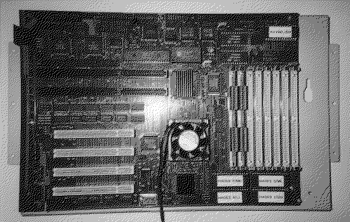

Previous
Next
TOC
Ersatzteil-Teilebezeichnung
MC68040RCxx
=
CPU 68040 mit 32/64 MHz im PGA Gehäuse
MC68060RCxx
=
CPU 68060 mit 33/66 MHz im PGA Gehäuse
MC88915
=
MC88915 Low skew CMOS
Phase locked loop clock driver
YM2149
=
Soundchip YM2149
68901
=
MFP-Chip 44Pin PLCC-Ausführung
1489
= GD75189 (
1489) RS-232 Receiver
1488
= GD75188 (
1488) RS-232 Transmitter
DP5380
=
DP5380 SCSI-Controller der Fa.
National Semiconductors
WDC37C65
=
Floppycontroller von Western Digital
68901 MFP
=
MFP-Chip 44Pin PLCC-Ausführung
EF6850P
=
68B50 ACIA (Fa.
Signetics-Thomson
Z85230
= Z85230 ESCC-Chip
DS12887
=
RealTimeClock + NV RAM (Fa.
Dallas)
8031AH-2
= 8 Bit Mikrocontroller plus externes Eprom (Keyboard-
interface für AT-Tastatur)
Die Hauptplatine des HADES

The Hades is the new computer of the Medusa Computer Systems.
Hades offers you a TOS-compatibility to the Atari TT. As processor
it is possible to put in the 68040 or the 68060. It is possible to
have up to 1GB RAM (
EDO or normal)! And with a hard drive bigger
than 1GB in the basic equipment you have got plents of space for
your datas. Hades offers series and parallel like Atari ST, the
second series of the Atari TT and LINK. Forhermore there is a bus
(like at Atari Falcon) for SCSI, TT and EIDE. On principle Hades is
supplied with PCI-bus Rev. 2.00. A graphic card ET4000 W32 PCI is
installed in the equipment of the computer. The basic equipment is
4MB RAM and so it is only a little bit slower than the Medusa. The
Hades knows ST-RAM, which works at the same speed as the current
TT-RAM. The Hades is the first TOS-compatible computer which has 4
PCI-slots. The PCI-bus has pushed through by PCs and Power Macs and
has a very quick transferrate. Hades is delivered with a PC-keyboard
and a mouse. The mouse is based on Atari-standard. It isn't possible
to use Atari laser printer, but if you really want to do this you
can buy a Medusa computer, which supports this.
weiterblättern
Kapitel Der Hades - ein TOS kompatibler Computer, Seite 1